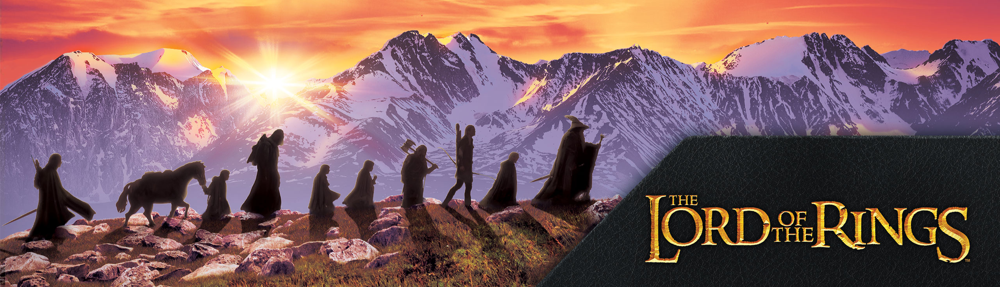

|  |
| Anasayfa | Karakterler | Oyuncular | Galeri | Evreni Hakkında | İletişim |
Lord of the Rings, İngiliz filolojist ve Oxford Üniversitesi profesörü J. R. R. Tolkien'in yazdığı epik fantezi türündeki romandır. Hikâye, Tolkien'in çocuklar için yazdığı 1937 tarihli Hobbit'in devamı olarak başlamıştı ancak sonunda ondan çok daha büyük bir eser haline geldi. Çoğu II. Dünya Savaşı'nda olmak üzere 1937 ve 1949 yılları arasında aşamalar halinde yazıldı. 150 milyonun üstündeki satış sayısıyla tüm zamanların en çok satan ikinci romanıdır.
Romanın ismi bütün Orta Dünya'yı fethedip hakimiyetine almakta kullandığı diğer Güç yüzükleri'ne hükmeden Tek Yüzük'ü ilk çağlarda yaratan, hikâyenin kötü karakterlerinden biri olan Lord Sauron'u kasteder.[not 1] İngiliz kırsalından pek de farklı olmayan Hobbit diyarı Shire'da sakince başlayan hikâye, Orta Dünya'nın kuzeybatısına kadar uzanırken Hobbitler; Frodo, Sam, Merry ve Pippin'in yanı sıra Hobbitlerin müttefikleri ve yol arkadaşları olan Kuzey Kolcusu Aragorn, Gondor kumandanı Boromir, savaşçı Cüce Gimli, Elf prensi Legolas ve büyücü Gandalf'ın gözünden Yüzük Savaşı'nın gidişatı takip edilir.
En başında Tolkien tarafından eserin Silmarillion ile birlikte iki ciltlik bir set oluşturması amaçlanıyordu ama yayıncı bu fikri reddetti. Ekonomik sebeplerden dolayı Yüzüklerin Efendisi 29 Temmuz 1954'ten, 20 Ekim 1955'e kadarki bir yıllık süreç içerisinde üç cilt olarak yayımlandı. Bu üç cilt Yüzük Kardeşliği, İki Kule ve Kralın Dönüşü olarak isimlendirildi. Roman yapı olarak üçüncü cildin sonunda dahil olduğu çeşitli bölümlerden, arka plan malzemeleriyle birlikte ikişer bölümden altı kitaba bölünmüş haldedir. Bazı baskılarda tüm roman tek bir cilt haline getirilmiştir. Yüzüklerin Efendisi defalarca yeniden basıldı ve birçok dile çevrildi.
Tolkien'in eseri temaları ve kökenleri hakkında yapılan kapsamlı araştırmalara konu oldu. Kendi içerisinde büyük bir eser olsa da hikâye, aslında Tolkien'in 1917'den beri kendisinin "mythopoeia" olarak tanımladığı bir süreç içerisinde üstünde çalıştığı büyük bir destanın yalnızca son halkasıydı. Filolojinin, mitolojinin, dinin, sanayileşmenin etkilerinin yazarda yarattığı tiksinmenin yanı sıra daha önceki fantezi eserleri ve Tolkien'in I. Dünya Savaşı'ndaki deneyimleri yazarın ilk çalışmaları ve Yüzüklerin Efendisi'nin hikâyesi üzerinde etkili oldu. Yüzüklerin Efendisi'nin de modern fantezi edebiyatı üzerinde büyük etkisi olduğu kabul edilir. Tolkien'in çalışmalarının etkisi öyle büyük oldu ki; "Tolkienian" ve "Tolkienesque" sözcükleri Oxford İngilizce Sözlüğü'ne girdi.
Yüzüklerin Efendisi'nin hep popüler kalması popüler kültürde göndermeler yapılmasına, Tolkien'in çalışmalarına hayran olanların topluluklar kurmasına ve Tolkien ile eserleri hakkında birçok kitap yayımlanmasına sebep oldu. Yüzüklerin Efendisi geçmişte olduğu gibi hala sanat eserleri, müzik, film, televizyon, video oyunları ve edebiyatı etkilemeye devam ediyor. Yüzüklerin Efendisi için radyo, televizyon ve birçok filmin ödüllü olan uyarlamaları yapıldı.
Çekimleri 2002 yılında başlayan film, Türkiye'de 12 Kasım 2004 tarihinde gösterime girdi. Türk sinemasında en pahalı yapımlardan biri olan filmi 4 milyon kişi izledi.[2] Filmin yapımcılığı, Uzan Ailesi'ne ait olan TürkFilmi adlı şirket ile Ömer Faruk Sorak tarafından üstlenilmiştir. Ancak Uzan ailesinin bankalarına devlet el koyunca film de Tasarruf Mevduatı Sigorta Fonu'nun denetimine geçti. Gösterime girişi geciken filmi BKM, Yılmaz aracılığıyla satın alarak yayımlayabildi. Filmin müzikleri Ozan Çolakoğlu'na, bitiş şarkısı ise Sagopa Kajmer'e aittir. Görüntü yönetmeni Veli Kuzlu'dur.
Kara Lord olarak da bilinen Sauron, kendi efendisi Melkor'un görevini tamamlamak üzere Orta Dünya'daki halkların zaaflarından yararlanıp "güç yüzüklerini" yapar.
“ Üç yüzük göğün altında yaşayan elf krallarına, Yedisi taştan saraylarındaki cüce hükümdarlara, Dokuzu ölümlü insanlara, ölecekler ne yazık; Bir yüzük gölgeler içindeki Mordor Diyarı'nda, Kara tahtında oturan Karanlıklar Efendisi'ne. Hepsine hükmedecek bir yüzük, hepsini o bulacak, Hepsini bir araya getirip, karanlıkta birbirine bağlayacak, Gölgeler içindeki Mordor Diyarı'nda. „
Güç Yüzükleri'nin sahipleri kandırıldıklarını anlamıştı fakat iş işten geçmişti.
Elfler, Sauron'a karşı savaş açtı ve Kara Lord, Elflerle büyük bir savaşa girdi. Birçok Elf şehri yok oldu. Daha sonra Elfleri yenemeyeceğini anlayan Sauron bir süre saklandı. Sonra tekrar yüzükten aldığı güçle iyice güçlenen Sauron, çok geçmeden Orklar, Haradrim halkı, Rhûn halkı ve kötülüğün hizmetine girmeye hazır diğer halklarla, Orta Dünya'nın tek hakimi olmak için işgale başladı. Elfler ve insanlardan oluşan ve Son İttifak olarak adlandırılan bir ordu Sauron'u durdurmayı başardı. Parmağındaki tek yüzük İsildur'un eline geçti fakat güce düşkün olan insanlar yüzüğü yok etmedi. Daha sonra yüzük efendisine ihanet etti ve İsildur'un ölümüne sebep oldu. Bir nehrin içinde kayboldu. Böylece unutulmaması gereken değerler unutulup gitti.
Aradan yüzyıllar geçti ve yüzük eski bir Hobbit olan Smeagol'un eline geçti. Sméagol yüzüğü 500 yıl boyunca dumanlı dağların derinliklerinde sakladı. Fakat Bilbo Baggins adlı Hobbit, Gollum'u yüzüğü düşürürken gördü ve onu aldı. Yıllar boyunca Mordor'daki Barad-Dûr'da gücünü yeniden toparlayan Sauron, kötülüğe hizmet eden tüm halkları yeniden birleştirerek tekrar saldırıya geçti. Sauron'un Orta Dünya'yı ele geçirmesi için ihtiyacı olan tek şey yüzüktü.Tüm bu olanların farkında olan İstari'den Gandalf, Elf temsilcisi Elrond'un ülkesinde bir meclis toplamayı başararak yüzüğün yok edilmesi gerektiğine karar verdi. Yüzüğü yok etme görevi ise Frodo Baggins adlı Hobbit'e verildi. Böylece serüven başlamış oldu.
Hikâyenin ilerleyen bölümlerinde, Elrond, Aragorn'a Elendil'in "Narsil" adlı (sadece kralların taşıyacağı) kılıcını verir. Aragorn ona "Andúril (Batının Alevi)" ismini verir. Bilbo Frodo'ya Mithril ve Sting kılıcını verdikten sonra Charadras (Karadras) Geçidi'ne giderler. Saruman dokuz yoldaşı büyüleyerek dağa şimşek çaktırır, üstlerine çığ düşer. Frodo'ya hangi taraftan gitmeleri gerektiğini sorar. Frodo madenlerden gitmeyi seçer. Moria Madenlerine girdiklerinde Khazad-Dûm köprüsü yakınlarında Melkor'un hizmetkarı Balrog yollarını keser. İstari Büyücüsü Gandalf, Balrog'u etkisiz hale getirmesine rağmen Balrog düşerken onu da kırbacıyla çeker. Gandalf'ın Khazad-Dûm köprüsü'nden düşmesinin üzerine Aragorn grubun yeni lideri olur. Lothlorien'e doğru giderler. Kahin gözlü, büyüleyici görünüşü olan Lothlorien'in Hanımı Galadriel ile görüşürler. Galadriel'in eşi Celeborn Sam'e ip, Merry ve Pippin'e keskin bir hançer, Aragorn'a büyüleyici bir hançer, Legolas'a prenslerin soyundan gelenlerin kullandığı özel bir yay, Frodo'ya ise Galadriel aynasını gösterir. Altın saçlarından bir tel isteyen Gimli'ye ise üç tel altın saç verir. Nehirlerin kıyısına varınca Boromir, yüzüğü Frodo'dan almak ister fakat alamaz.Yüzük onu zapt ettikten sonra Boromir keşke olanları değiştirseydim der fakat Aragorn, onun yerine Frodo'yu Mordor'a yollar. Mordor yoluna doğru giden Frodo'nun peşine Sam takılır. Savaş ortaya çıkınca Boromir Uruk-hailar tarafından okla öldürülür. Üç Avcı (Aragorn, Gimli ve Legolas), kardeşlik bozulunca kendilerine yeni bir grup kurup Boromir'i ararlar. Kardeşlik dağılmıştır, Merry ve Pippin, Boromir'in söylediğine göre Isengard'a doğru esir alınmıştır, Sam ve Frodo, Mordor yolundadır, Üç Avcı, Merry ve Pippin'i aramak için yola çıkarlar.
Tolkien'in ilgi alanındaki filoloji, din (özellikle de Katolizm), Peri Hikâyeleri, İskandinav ve Germen mitolojisi, ayrıca Kelt, Slav, Pers, Yunan ve Fin mitolojisi hakkındaki kişisel araştırmalarının Yüzüklerin Efendisi'nin gelişimine katkısı büyük oldu. Bazı eleştirmenlerin doğruladıkları ve Tolkien'ın bizzat açıkladığı üzere yazarlar George MacDonald ve William Morris ile Anglo-Sakson şiiri Beowulf'un da önemli etkisi vardır. Eleştirmenler ayrıca Wagner'in, Nibelung Yüzüğü'nün Tolkien üzerinde direkt etkisi üzerinde tartışmışlardır.
Tolkien, eserde bilinen herhangi bir dine ya da inanca yer vermez. Daha ziyade temalar, ahlak felsefesi ve romandaki Evren Bilim'i onun Katolik dünya görüşünü yansıtır. Mektuplarının birinde Tolkien şöyle diyor; "Yüzüklerin Efendisi elbette temelde dini ve Katolik bir çalışma; bu başta bilinçsizceydi ancak tashih sırasında bunun farkındaydım. Hayali bir dünyaya dinle ilgili herhangi bir şey koymamamın sebebi işte bu. Dini öğeler hikâyenin ve sembolizmin içine zaten yedirildi."
Tolkien'in Birmingham'ın ilk önce Sarehole Mill sonra da Edgbaston Reservoir bölgelerinde geçirdiği çocukluğundaki anıları, romandaki bazı yerlerin ve karakterlerin yaratılmasına ilham verdi. Ayrıca Edgbaston'ın kuzeybatısında kolayca ulaşılabilecek Black Country'de de bazı ipuçları var. Bu "Underhill" gibi isimlerin anlamını ve Saruman'ın sanayileşmiş Isengard ile Shire'ı da açıklıyor. Ayrıca Shire ve çevresinin Tolkien'in 1940'larda sık sık ziyaret ettiği Lancashire'daki Stonyhurst Koleji etrafındaki kırsal bölgeden uyarlandığı ileri sürülür. Eserde Tolkien'in I. Dünya Savaşı'nda yaşadıklarının etkisi de görülür. Frodo'nun muzdarip olduğu posttravmatik stres bozukluğunu Tolkien de ilk defa Somme Muharebesi'nde yaşamıştır.
Yüzüklerin Efendisi 1950'lerde yayımlanmasına rağmen Tolkien Tek Yüzük'ün Atom bombasının bir alegorisi olmadığı ve eserlerinde kesinlikle alegorik bir anlatım kullanmadığı konusunda ısrarcıydı. Bunun yanında uygun gördüğü okuyucu yorumlarına karşı oldukça açıktı.
Birkaç eleştirmen ırklarla ilgili olduklarını düşündükleri bazı noktalar yakaladılar. Bu görüşler genelde Tolkien'in iyi ve kötü tasvirine, karakterlerin ırklarına (Elfler, Cüceler, Hobbitler, Haradrimler, Orklar) ve ırklarının davranışlarını belirlemesine dayalıydı. Karşı görüştekiler ırk odaklı eleştirilerin sahiplerinin yazılı kaynakları görmezden geldiklerine, eserin kendisinden çok uydurmalara göre fikir belirttiklerine, yazarın özel hayatındaki ırkçı tutumlarına ya da olaylara dair bir kanıt olmayışına dikkat çekerler ve ırkçılık konusunda marjinal bir görüşe sahip olduğunu iddia ederler.